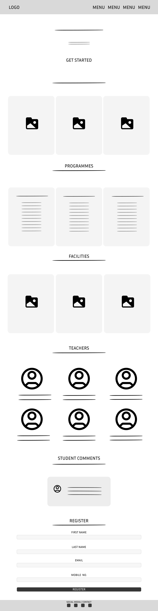

The homepage is the most critical part of the website as it forms
the first impression for visitors. It is designed to immediately
captivate users with a visually striking hero section that
highlights the site's primary offerings. The navigation bar,
placed at the top of the page, ensures that users can access any
part of the site within seconds. To encourage user engagement,
call-to-action buttons are strategically placed, leading users to
explore more content.
In addition, a balance of visuals and text is maintained to keep
the layout clean and approachable. With responsive design
principles in mind, the homepage adapts flawlessly to different
screen sizes, providing a consistent experience across devices.
This ensures that all users, whether on mobile or desktop, are
greeted with an interface that is functional and aesthetically
pleasing.
